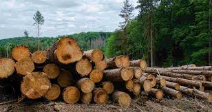
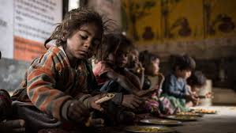

O meio ambiente é o conjunto mais importante para a vida do ser humano, é nele que vivemos e, mesmo assim o ser humano consegue destruir o meio em que vive. Mesmo com todo o desmatamento, ainda é possível realizar mudanças no presente que podem transformar o mundo no futuro.
Diminuir o consumo
Por causa do exagero e aument desordenado do consumismo, a procura por matérias primas e recursos naturais também aumentam. A exploração a tudo o que a natureza oferece acontece exageradamente. Óleos, madeiras e outros elementos são os mais retirados. E para que isso acontessa é preciso a destruição de muitas florestas
Diga não ao desperdício de alimento
O Brasil é um dos países que mais que mais joga comida fora todos os dias. Segundo a FAO (Organização das Nações Unidas para a Alimentação e Agricultura) o nosso país desperdiça até 40% de tudo o que consome.
Cuidar do meio ambiente
Muitas pessoas com o cotidiano atarefado, não percebem o quanto o meio ambiente é importante nas nossas vidas. Afinal de contas, é por meio dele que tiramos todo o nosso sustento. Ações como tomar banho mais rápido, evitar o desperdício de água, reutilizar a água da chuva são ações que podem mudar o mundo.